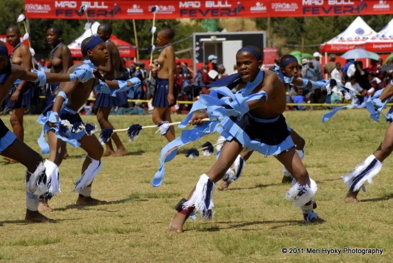

Morija Arts & Cultural Festival
Experience the Heart of Basotho Culture
Home | About | Programme | Tickets | Contact
About the Festival
The Morija Arts and Cultural Festival is one of the most important cultural events in Lesotho. It celebrates the rich traditions, music, art and heritage of the Basotho people. The festival attracts both local and international tourists who come to experience its unique atmosphere. It has become a key event in promoting tourism in the country.
Visitors have the opportunity to explore a wide range of cultural activities and performances. The festival showcases traditional dances, music, crafts and local cuisine. It also provides a platform for artists to share their talents with a wider audience. The event continues to grow and attract more visitors each year.
Festival Highlights


History and Significance
The Morija Festival has a long history rooted in the preservation of Basotho culture. It was created to celebrate and promote cultural identity through various forms of artistic expression. Over the years, it has become a symbol of pride for the local community. The festival plays an important role in keeping traditions alive for future generations.
In addition to cultural preservation, the festival contributes to the local economy. It attracts tourists who support local businesses such as food vendors and craft sellers. The event also encourages cultural exchange between visitors and the community. This makes the festival both socially and economically important.
Target Visitors
- Local tourists exploring cultural heritage
- International tourists interested in African culture
- Students and researchers studying traditions
- Families looking for entertainment and learning